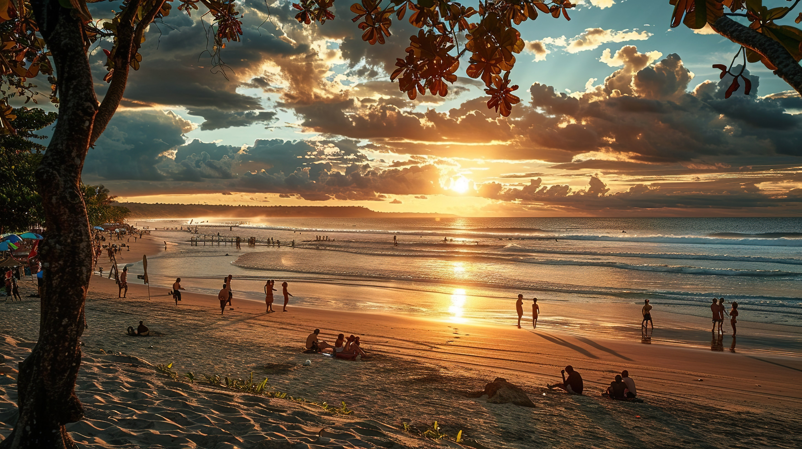

Destinasi Wisata Indonesia
Indonesia adalah surga wisata dengan berbagai destinasi menakjubkan, mulai dari pantai tropis hingga pegunungan yang indah. Berikut adalah beberapa tempat wisata terkenal di Indonesia:

Pantai Kuta, Bali
Pantai Kuta adalah salah satu destinasi wisata paling populer di Bali, terkenal dengan pasir putih dan pemandangan matahari terbenam yang memukau.
Raja Ampat, Papua
Raja Ampat adalah surga bagi pecinta bawah laut, menawarkan keindahan terumbu karang yang mempesona dan keanekaragaman hayati laut yang luar biasa.

Gunung Bromo, Jawa Timur
Gunung Bromo adalah salah satu gunung berapi paling terkenal di Indonesia, menawarkan pemandangan matahari terbit yang spektakuler.